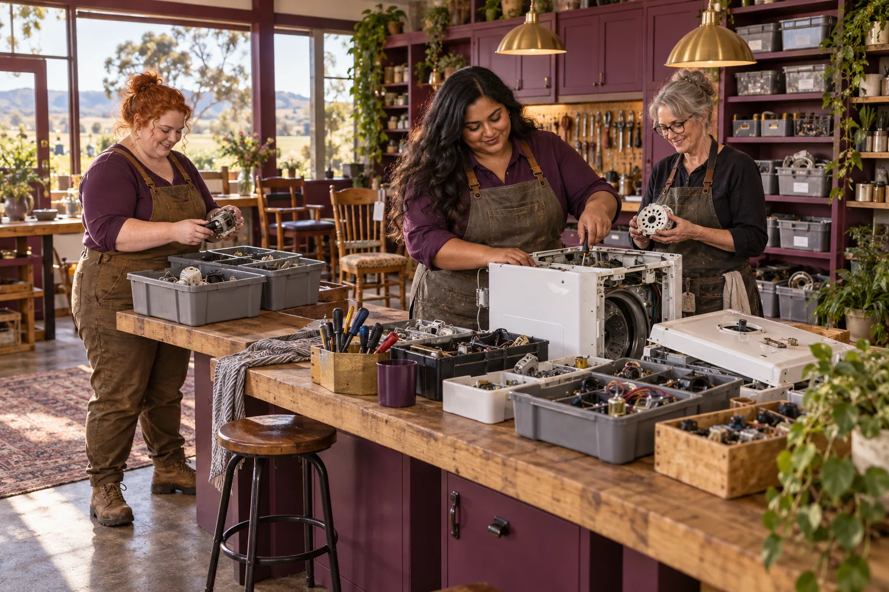

Define the stream, ownership and sampling approach with the responsible operator and qualified advisers.

500 Queens / Mining Process Byproducts
Mining Process Byproducts
Evaluate mining byproducts with measured material properties and a customer-defined use.
Follow the connections. Choose your direction.
The need worth working on.
A mining byproduct can contain useful material, unwanted constituents or both. The economic and environmental result depends on its specific properties, history and handling needs. A responsible venture should avoid describing a whole stockpile as a resource until representative testing and an actual use support the claim.
What the enterprise could offer.
Explore a characterisation and matching service through qualified mining, environmental and materials partners. Begin with authorised information and a safe representative sample. The first product may be a better decision record, a process-monitoring tool or a tested secondary input, rather than a new extraction operation.
People to build with
- Mine and processing operators
- Specialist laboratories
- Manufacturers assessing alternative inputs
A sample-to-specification assessment
Obtain the proposed customer's acceptance criteria before selecting a processing method.
Commission appropriate characterisation and compare variability across representative samples.
Model processing, water, energy, transport and residual handling as one complete system.
The first result
A reviewed characterisation report and a decision on whether a specific reuse pathway warrants further work.
What needs to be demonstrated.
Research frontier
The starting evidence
The planning title is Mining Process Byproducts. No deposit, recovery yield, treatment process or commercial resource estimate is supplied.
The open question
Whether a useful component can be recovered consistently without unacceptable cost or residual impacts.
The next measurement
Representative composition, accepted product yield, total inputs and the properties of material left behind.
Build the means to deliver.
Useful capabilities and resources
- Responsible operator agreement
- Qualified sampling and laboratory analysis
- A potential receiving customer
A possible business model
Characterisation, monitoring or specialist process services may precede any recovery venture. Commercial claims require evidence specific to the stream.
A leadership decision to practise
Count the residual stream and long-term obligations in the business case, rather than focusing only on the valuable fraction.
People, consequences and decisions.
- Selective samples can exaggerate value.
- Recovery can concentrate unwanted constituents elsewhere.
- Transport, water and energy may dominate the outcome.
If equality were being designed now...
- Can women in the mining and materials workforce shape the characterisation question and identify overlooked practical constraints?
- Who would own the knowledge and share the value if a mining byproduct gained a useful new market?
Begin with women's own experiences across bodies, ages, cultures and places. Invite disagreement and choose a practical change together.
Create a women-led design brief →Build your learning council.

Civilisation PillarRiver Queen
Anglo-Torres Strait Islander
Follow the water, and the people who depend on it.

Build alongside these ideas.
Simulations and robotsOff World Mining and Refining
Turn off-world resource ambitions into material-handling experiments with clear terrestrial value.
Research frontier
Waste reclamationIndustrial Process Byproducts
Match one industrial byproduct to a real customer specification and an honest material balance.
Engineering development
Waste reclamationSubterranean City Displaced Muck
Plan excavated-material handling before a major underground project creates the material.
Engineering development
Follow existing public concept work.
Connected public conceptExtreme Matter Atlas
Explore elements, crystals, metamaterials and frontier ideas through quantities, mechanisms and the nearest working technology.
Connected public conceptStraddie Tip Loop Lab
Explore how repair, reuse and local material recovery could keep more value on the island.
From the original suggestion to a working brief.
Original concept from 500 Queens VC NEW Long, slide 16; current context from the September 2026 planning document. This expanded brief and pilot are proposed development, not evidence of an operating enterprise or confirmed partnership.
Original title: Mining Process Biproducts. The pilot, business model and learning connections on this page are proposed developments of that original idea.